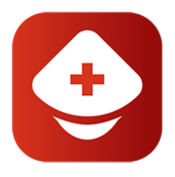

Any donor, who is healthy, fit and not suffering from any transmittable diseases can donate
blood
Donor must be 18-60 years age and having a minimum weight of 50Kg can donate blood. A
donor can again donate blood after 3 months of your last donation of blood.
Donor’s Hemoglobin level is 12.5% minimum.
BP Diastolic 50 to 100 mm Hg and Systolic 100 to 180 mm Hg.
Body temperature should be normal and oral temperature should not exceed 37.5 degree
Celsius.
Who cannot donate blood?
Donors should not suffer from Cardiac arrest, hypertension, kidney alignments, epilepsy or
diabetics.
Ladies with a bad miscarriage should avoid donating blood for the next 6 months.
If donor already donated blood or have been treated for malaria within the last three months.
If donor undergone any immunization within the past one month.
If donor consumed alcohol within the last 24 hours
If you are HIV+
If donor had a dental work for next 24 hours and wait for one month if donor had a major
dental procedure.
How often can I donate blood?
You must wait at least eight weeks (56 days) between donations of whole blood and 16 weeks (112
days) between Power Red donations. Platelet apheresis donors may give every 7 days up to 24 times
per year.
Can you give blood if on medication?
Most medications do not prevent you from donating blood. Common medications such as those
used to control blood pressure, birth control pills and over-the-counter medications do not affect
your eligibility. If you have recently taken antibiotics, you must have completed the course prior to
donating.
Can you donate blood after smoking cigarettes?
Please avoid smoking on the day before donating. You can smoke 3 hours after donation. You will
not be eligible to donate blood if you have consumed alcohol 48 hours before donation. You will
not feel drained or tired if you continue to drink fluids and have a good meal.
How many pints of blood can you give?
The average adult has about 10 pints of blood in his body. Roughly 1 pint is given during a
donation. A healthy donor may donate red blood cells every 56 days or Power Red every 112 days. A
healthy donor may donate platelets as few as 7 days apart, but a maximum of 24 times a year.
What should I do before I donate?
Before donating, you should eat a good meal and drink plenty of fluids.
What to do after donating blood?
To help you stay well after you have given blood, we advise you to:
Keep the pressure dressing on your arm for about 30 minutes after you have given blood, and
the plaster on for 6 hours. Rest for a short time after giving blood.
Eat and drink – you will be encouraged to have at least 2 drinks and a snack before you leave
Avoid using the donation arm to carry anything very heavy for the rest of the day
Avoid having a hot bath after you have given blood.
Can I donate if I have a cold, flu or fever?
You must be symptom-free from cold, flu or fever on the day of donation
.
Can I donate if I have recently had a vaccination?
Donation is acceptable following most vaccinations as long as you are feeling well. Donors
vaccinated for chickenpox, measles, mumps, rubella and smallpox or who have received the oral
polio vaccine must wait two to four weeks after vaccination.
Where can I donate?
You can donate at any of our registered blood banks and hospitals or at any blood camp being
organized by us. You can also opt to be notified in case of donation requirement near your location
and we will contact you.
What if I have a question not answered here?
Please use the helpline number and get in touch with our representatives who will be happy to
assist you.

Information
Human blood cannot be made in laboratories, so access to safe blood can only be ensured by regular
blood donation.
Your body would restore blood volume immediately. Red blood cells are replaced within 3-4 weeks.
Regular blood donation decreases blood pressure in hypertensive patients and reduces further
complications of stroke and other related diseases. (Sundrela Kamhieh-Milz 2015)
Women who are pregnant, breastfeeding or who have their menstrual periods are not allowed to
donate blood and must defer donation.
You cannot be allowed to donate if you have taken alcohol in last 24 hours, antibiotics in last 2 days
or aspirin in last 3 days.
Blood can be donated as whole blood or one of its components can be donated (ex platelets, Red
blood cells).
A study published in Journal of Cancer Epidemiology suggested that regular blood donation reduces
the risk of various cancers significantly. (Farnaz Vahidnia Volume 2013 (2013), Article ID 814842,).
If you are an IV drug user or have donated blood in last 8 weeks, you are not eligible for blood
donation.
Blood donation helps in weight loss and reducing blood cholesterol levels.
There are positive psychological benefits of blood donation. Donors generally have feelings of
satisfaction, greater alertness and increased well-being after donation. (Nilsson Sojka B 2003
Feb;84(2):120-8.)
As per the Government of India rules, maximum number of units which can be collected in a single
donation camp is limited to 500.
Blood Donation can only be voluntary. Govt. of India has banned professional blood donation
(donating for money) from Dec. 1997.
Permanent Deferral Criteria for blood donation
Cancer
Heart disease
Abnormal bleeding tendencies
Unexplained weight loss
Diabetes-controlled on insulin
Hepatitis infection
Chronic nephritis
Temporary Deferral Criteria for blood donation
Post-donation instructions
Drink more fluids than usual in next 4 hours.
Do not remain hungry.
Do not smoke for half an hour
Do not take alcoholic drinks for at least 6 hours.
If there is feeling of faintness or dizziness, either lie down or sit with head between knees